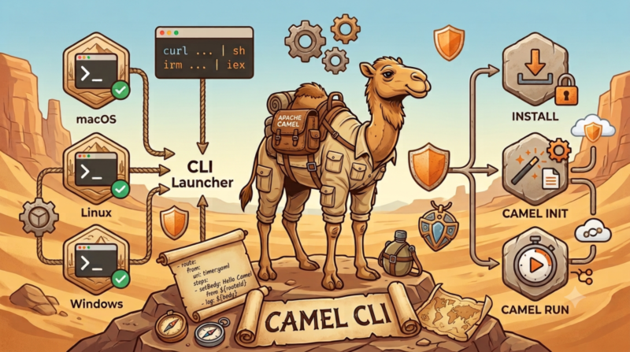

Getting started with the Camel CLI used to mean installing a JDK, then jbang, then finally running jbang camel@apache/camel init for the first time. That friction is gone. install.sh and install.ps1 get the Camel CLI Launcher running on your machine with a single command, no package manager and no separate jbang install required.
One-line install
On macOS and Linux:
curl -fsSL https://camel.apache.org/install.sh | sh
On Windows, in PowerShell:
irm https://camel.apache.org/install.ps1 | iex
Update (2026-07-25): A server configuration issue was briefly returning a 403 for the install.sh/install.ps1 downloads above. This has been fixed.
Both installers resolve and install the latest published release by default, or a specific version if you request one with --version (install.sh) or -Version (install.ps1). Installation is always per-user and never requires sudo or elevation.
From zero to a running route
Once the installer finishes, camel is on your PATH. Create a route:
camel init hello.yaml
This generates a minimal route that fires a timer and logs a message:
- route:
from:
uri: timer:yaml
parameters:
period: "1000"
steps:
- setBody:
simple: Hello Camel from ${routeId}
- log: ${body}
Run it:
camel run hello.yaml
... Started route1 (timer://yaml)
... hello.yaml:9 : Hello Camel from route1
... hello.yaml:9 : Hello Camel from route1
That is the entire path from a fresh machine to a running integration: one install command, camel init, camel run.
Verify before execute
The installers are built around a simple security property: the launcher archive is downloaded from Maven Central, but it is verified against a SHA-256 checksum published on camel.apache.org before anything is extracted or run. The archive and the checksum come from two independent hosts, so tampering would require compromising both at the same time. The installer also rejects unsafe archive contents and confirms a Java 17+ runtime before activating the new version.
Learn more
See the installation guide for pinned versions and the inspect-before-run workflow. The installer scripts themselves live in the Apache Camel repository, under dsl/camel-jbang/camel-launcher/src/install.